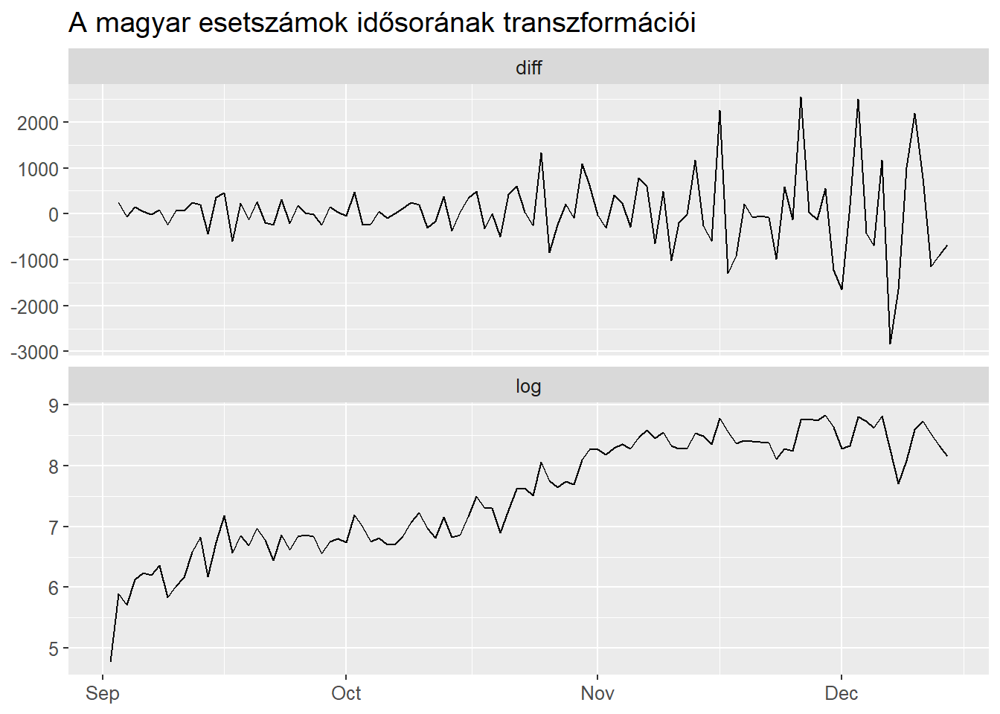
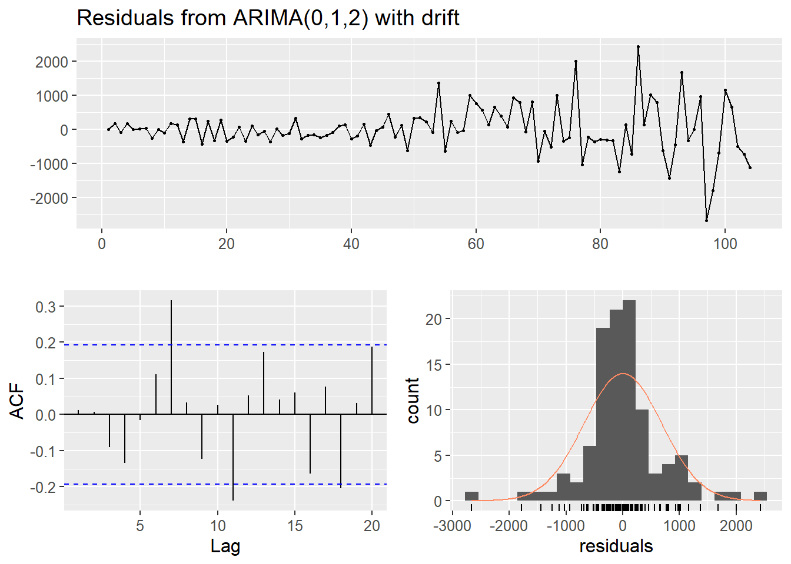
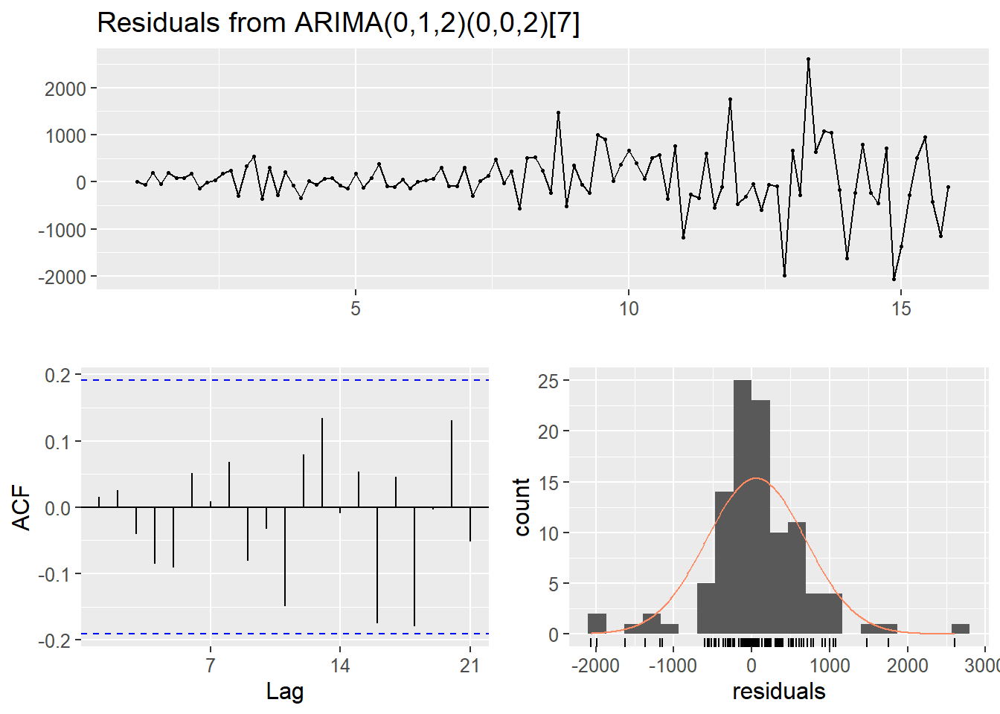
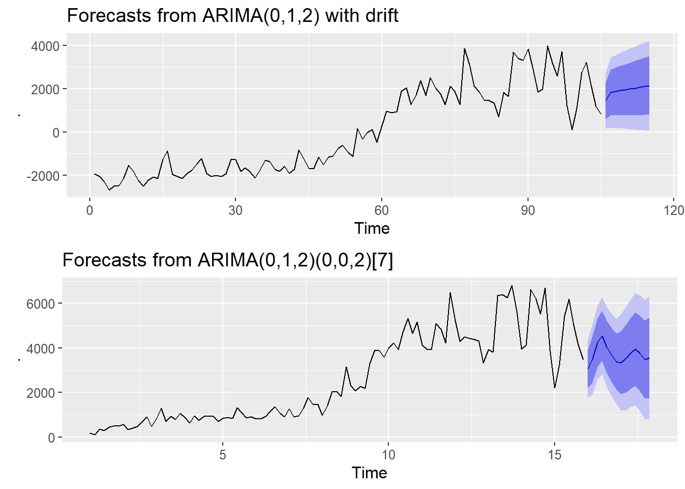

Idősor elemzés
A következőkben sztochasztikus idősorelemzési eljárással modellezzük a magyar COVID-19 megbetegedés számot. Az adatok az Our World in Data4 weboldalról származnak, napi új regisztrálásokat és haláleseteket tartalmaznak.
| A letöltött adattábla | |||||||||||
|---|---|---|---|---|---|---|---|---|---|---|---|
| dateRep | day | month | year | cases | deaths | countriesAndTerritories | geoId | countryterritoryCode | popData2019 | continentExp | Cumulative_number_for_14_days_of_COVID-19_cases_per_100000 |
| 2020-12-14 | 14 | 12 | 2020 | 746 | 6 | Afghanistan | AF | AFG | 38041757 | Asia | 9.013779 |
| 2020-12-13 | 13 | 12 | 2020 | 298 | 9 | Afghanistan | AF | AFG | 38041757 | Asia | 7.052776 |
| 2020-12-12 | 12 | 12 | 2020 | 113 | 11 | Afghanistan | AF | AFG | 38041757 | Asia | 6.868768 |
| 2020-12-11 | 11 | 12 | 2020 | 63 | 10 | Afghanistan | AF | AFG | 38041757 | Asia | 7.134266 |
| 2020-12-10 | 10 | 12 | 2020 | 202 | 16 | Afghanistan | AF | AFG | 38041757 | Asia | 6.968658 |
| 2020-12-09 | 9 | 12 | 2020 | 135 | 13 | Afghanistan | AF | AFG | 38041757 | Asia | 6.963401 |
dat %>%
filter(countryterritoryCode == 'HUN') %>%
arrange(dateRep) %>%
ggplot +
geom_line(aes(dateRep, cases)) +
labs(x = NULL, y = 'Új megfertőzdések', title = "Megfertőződések számának alakulása Magyarországon")
Érdemes strutúrális törésnek tekinteni 2020 szeptemberét, inntől jelentősen emelkednek az esetszámok. Mivel látszik, hogy nem stacioner a napi új esetek száma, így annak transzformációit is érdemes megvizsgálni (diff, log).
dat %>%
filter(countryterritoryCode == 'HUN', dateRep > lubridate::ymd('2020-09-01')) %>%
arrange(dateRep) %>%
select(dateRep, cases) %>%
mutate(
diff = c(NA, diff(cases)),
log = log(cases)
) %T>%
{print(apply(select(., diff, log), 2, function(x)
forecast::ndiffs(na.omit(x)) == 0
))} %>%
select(-cases) %>%
pivot_longer(-1) %>%
ggplot +
geom_line(aes(dateRep, value)) +
facet_wrap(~name, ncol = 1, scales = 'free_y') +
labs(title = 'A magyar esetszámok idősorának transzformációi', x = NULL, y = NULL) diff log
TRUE FALSE 
Mivel az esetszámok differenciázottja stacioner, így azon folytatjuk a Box-jenkins modellezést.
dat %>%
filter(countryterritoryCode == 'HUN', dateRep > lubridate::ymd('2020-09-01')) %>%
arrange(dateRep) %>%
pull(cases) %>%
ts %>%
forecast::auto.arima() %T>%
{tab_header(gt(broom::tidy(.)), 'ARIMA(0,1,2) modell')} %>%
forecast::checkresiduals()
Ljung-Box test
data: Residuals from ARIMA(0,1,2) with drift
Q* = 17.63, df = 7, p-value = 0.01376
Model df: 3. Total lags used: 10A Ljung-Box teszt alapján elutasítjuk a nullhipotézist, miszerint a maradéktag fehérzaj folyamat lenne. A maradéktagot ACF-jéből látjuk, hogy a 7. késleltetés az, amely statisztikailag szignifikáns és ez elméleti megfontolásból is megállja a helyét (Hétvégén kevesebbet mennek el az emberek teszetlni, mert inkább otthon maradnak megpróbálni kipihenni).
dat %>%
filter(countryterritoryCode == 'HUN', dateRep >= lubridate::ymd('2020-09-01')) %>%
arrange(dateRep) %>%
pull(cases) %>%
ts(frequency = 7) %>%
forecast::ggmonthplot() + labs(x = NULL, y = 'Napi esetszám',
title = 'Esetszámok hét napjai szerint lebontva')
dat %>%
filter(countryterritoryCode == 'HUN', dateRep >= lubridate::ymd('2020-09-01')) %>%
arrange(dateRep) %>%
mutate(day = weekdays(dateRep)) %>%
lm(formula = cases ~ day) %>%
.$resid %>%
ts %>%
forecast::auto.arima() %>%
{mod <<- .}
broom::tidy(mod) %>%
gt %>%
tab_header('Heti szezonalitással szűrt ARIMA(0,1,2) modell paraméterei')| Heti szezonalitással szűrt ARIMA(0,1,2) modell paraméterei | ||
|---|---|---|
| term | estimate | std.error |
| ma1 | -0.2319610 | 0.09318890 |
| ma2 | -0.4137085 | 0.09259579 |
| drift | 38.5799908 | 23.28876815 |

Ljung-Box test
data: Residuals from ARIMA(0,1,2) with drift
Q* = 11.929, df = 7, p-value = 0.1029
Model df: 3. Total lags used: 10SARIMA
dat %>%
filter(countryterritoryCode == 'HUN', dateRep >= lubridate::ymd('2020-09-01')) %>%
arrange(dateRep) %>%
pull(cases) %>%
ts(frequency = 7) %>%
forecast::auto.arima() %T>%
{m.sarima <<- .} %>%
forecast::checkresiduals()
Ljung-Box test
data: Residuals from ARIMA(0,1,2)(0,0,2)[7]
Q* = 9.397, df = 10, p-value = 0.4949
Model df: 4. Total lags used: 14Szezonális ARIMA modellt alkalmazva lényegesen nagyobb p-értéket kaptunk a modell hibatagjain elvégzett Ljung-box teszthet.
| Illesztett SARIMA modell paraméterei | ||
|---|---|---|
| term | estimate | std.error |
| ma1 | -0.2611314 | 0.09140709 |
| ma2 | -0.3684478 | 0.09375723 |
| sma1 | 0.4138886 | 0.10226211 |
| sma2 | 0.2088278 | 0.10980747 |
ggpubr::ggarrange(
forecast::forecast(mod) %>%
forecast::autoplot(showgap = F),
forecast::forecast(m.sarima) %>%
forecast::autoplot(showgap = F),
nrow = 2
)